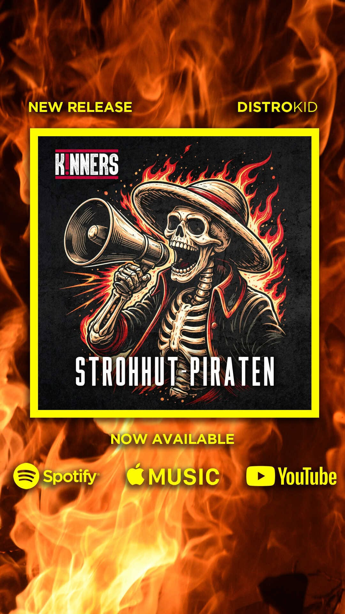

Review
K!NNERS - Strohhut-Piraten

K!NNERS bezeichnen sich auf ihrer Homepage als unehelichen Nachwuchs von Campino und Farin Urlaub.
Zum Glück höre ich die Toten Hosen bei ihnen nicht besonders deutlich heraus. Sonst wäre das hier vermutlich keine freundliche Review geworden, sondern eine Hassschrift mit Refrain.
Bei einem Song namens "Strohhut-Piraten" werde ich trotzdem erst einmal misstrauisch. Zu schnell landet man bei Augenklappen, Rum-Romantik und Musik, zu der auf irgendeinem Mittelaltermarkt geschunkelt wird.
K!NNERS schlagen zum Glück nicht komplett in diese Richtung.
Für mich steckt hinter dem zunächst etwas albernen Titel ein Song über Freiheit, Selbstbestimmung und Menschenwürde. Die Piraten dienen also nicht nur als Dekoration, sondern als Bild für Menschen, die ihren eigenen Weg gehen und sich nicht alles gefallen lassen wollen.
Große politische Theorie wird daraus nicht gebaut. Die Botschaft ist trotzdem klar.
Musikalisch bleibt die Band bei eingängigem Rock-Punk, der leicht ins Ohr geht und genug Kante behält, um nicht völlig harmlos zu werden. Der Refrain ist deutlich auf gemeinsames Mitsingen ausgelegt und dürfte live noch besser sitzen als allein vor dem Rechner.
Mir persönlich ist das stellenweise etwas zu sauber und gut gelaunt. Ein bisschen mehr Unordnung hätte dem Song nicht geschadet. Aber K!NNERS machen daraus auch kein großes Drama.
"Strohhut-Piraten" ist unkompliziert, klar in der Aussage und eingängig genug, um schnell hängen zu bleiben. Die Mischung aus Albernheit und Haltung ist besser, als der Titel zunächst vermuten lässt.
Und solange Campino musikalisch draußen bleibt, bin ich heute sogar großzügig.
K!NNERS Homepage
K!NNERS - Strohhut-Piraten bei Spotify suchen